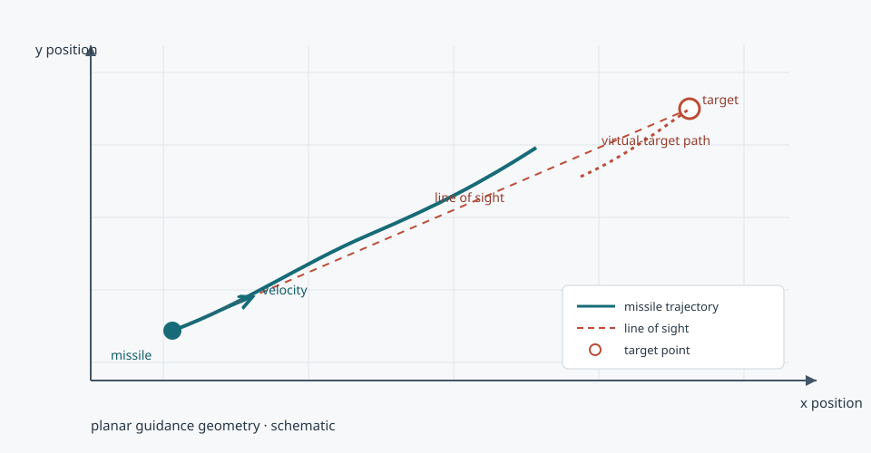

2D guidance runs
Missile and virtual-target motion in the simulation scripts.
A collection of 2D missile and virtual-target simulations with scripts for parameter studies, comparison, and plotting.面向二维导弹与虚拟目标制导分析的仿真和绘图脚本集。

Separate numbered folders preserve the experiment layout; each contains its own simulation or analysis scripts.
Missile and virtual-target motion in the simulation scripts.
Batch and parameter-search scripts for configured cases.
Scripts to compare results from selected simulation runs.
Plotting scripts visualize trajectories and simulation outputs.